Self-engaging
Welcome to Zabbix API self engaging methods. All upcoming chapters will address the tools available to allow software to re-engage with itself. It is like developing a small service(s) which runs on the top of Zabbix and do exactly the tasks we told to do. This is like simulating an extra employee in the company.
API variables
To start to engage with Zabbix API:
Create a dedicated service user. Go to Users => Users, click Create user, set Username api, install Groups No access to the frontend, Under Permissions tab, assign user role Super admin role which will automatically give user type Super admin.
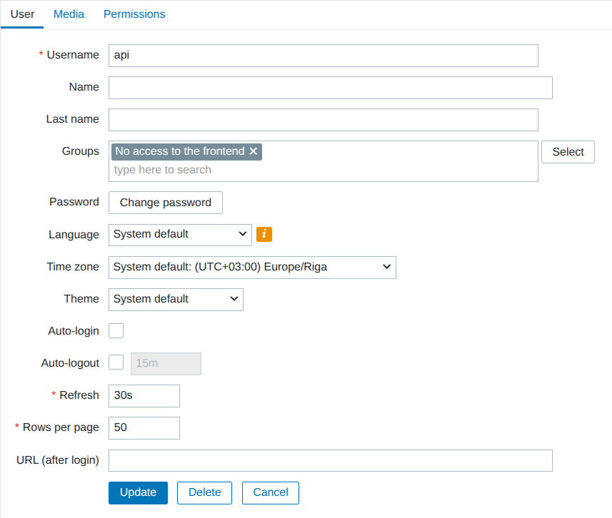
12.1 Create API user
Permissions tab:
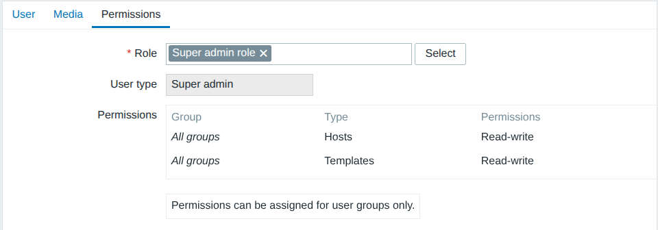
12.2 API user role and user type
Under Users => API tokens press New API token, assign user api. We can uncheck Set expiration date and time, press Add. Copy macro to clipboard.
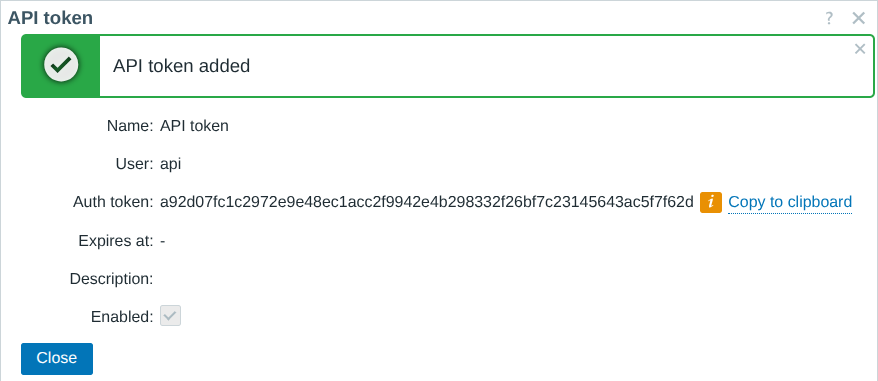
12.3 Add token to user object
Visit Administration => Macros and install macro. To simulate all upcoming chapters much faster, consider running token in plain text.
Token dafa06e74403ca317112cf5ddd3357b2ad2a2c5cb348665f294a53b4058cfbcf
must be placed:
Address https://zabbix.book.the of the frontend server must be used via:
Later throughout chapters, we will use a reference on the API endpoint in a format of:
Now we can take new 2 variables and install globally:
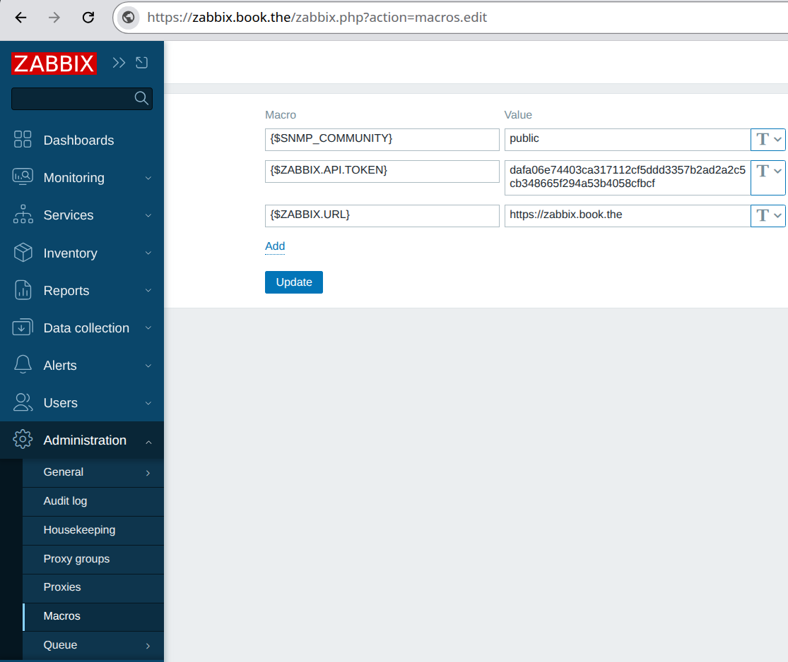
12.4 User macros
First API call
If you feel new to Zabbix API, try this curl example from Zabbix frontend server.
Set bash variables:
ZABBIX_API_TOKEN="dafa06e74403ca317112cf5ddd3357b2ad2a2c5cb348665f294a53b4058cfbcf"
ZABBIX_URL="https://zabbix.book.the/api_jsonrpc.php"
This snippet is tested and compatible with version 7.0/7.4:
curl --insecure --request POST \
--header 'Content-Type: application/json-rpc' \
--header 'Authorization: Bearer '$ZABBIX_API_TOKEN \
--data '{"jsonrpc":"2.0","method":"proxy.get","params":{"output":["name"]},"id":1}' \
$ZABBIX_URL
Setting Bearer token in header is available and recommended since 7.0.
Setting a static token is available since 6.0. In version 6.0, the token is not in header, but inside JSON body like this:
curl --insecure --request POST \
--header 'Content-Type: application/json-rpc' \
--data '{"jsonrpc":"2.0","method":"proxy.get","params":{"output":["host"]},"auth":"'"$ZABBIX_API_TOKEN"'","id":1}' \
$ZABBIX_URL
Host group membership (HTTP agent)
Use case
Every time an email arrives user would love to see all host groups the host belongs.
Implementation
Use {HOST.HOST} as an input for the "host.get" API method and find out about host group membership. Format reply in one line, store it in inventory.
An item type "HTTP agent" is fastest way to run a single Zabbix API call and retrieve back result. This is possible since Zabbix 6.0 where configuring a static session token becomes possible. An upcoming solution is tested and works on version 7.0/7.4
Create new HTTP agent
Item name: host.get
Type: HTTP agent
Key: host.get
Type of information: Text
URL:
Request type: POST
Request body type: JSON data
Request body:
{
"jsonrpc": "2.0",
"method": "host.get",
"params": {
"output": ["hostgroups"],
"selectHostGroups": "extend",
"filter": {"host":["{HOST.HOST}"]}
},
"id": 1
}
Headers
Name Authorization with value:
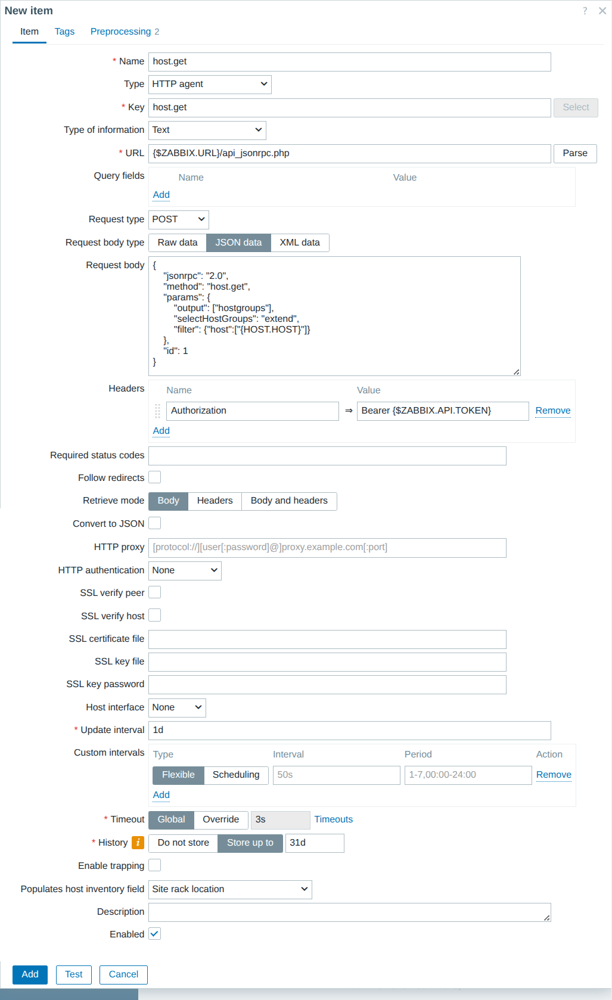
12.5 Host get method via HTTP agent item
Preprocessing
JSONPath:
JavaScript:
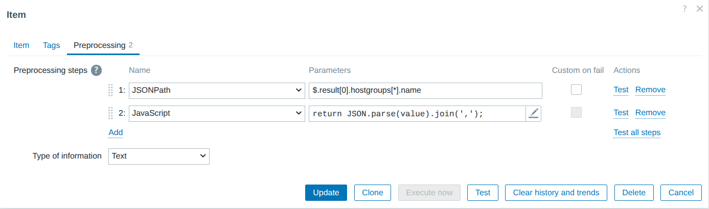
12.6 Preprocessing
Last step is to store the outcome in the inventory. Scroll down to the bottom of HTTP agent item and select an inventory field for example "Site rack location".
To access suggested inventory field, we must use:
To include extra information inside the message template follow this lead:
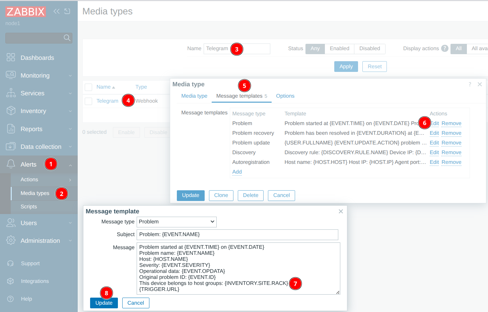
12.7 Inventory fields in media type
Warning
If data collection is done by Zabbix proxy, it is possible the proxy
is incapable to reach Zabbix frontend server due to limitation in firewall.
Use curl -kL "https://zabbix.book.the" to test!
Auto close problem (Webhook)
Use case
Due to reason of not being able to find a recovery expression for a trigger, need to close the event automatically after certain time.
Implementation
Trigger settings must support Allow manual close. On trigger which needs
to be auto closed there must be a tag auto with a value close.
An action will invoke a webhook which will use Zabbix API to close event.
To implement, visit Alerts => Scripts, press Create script
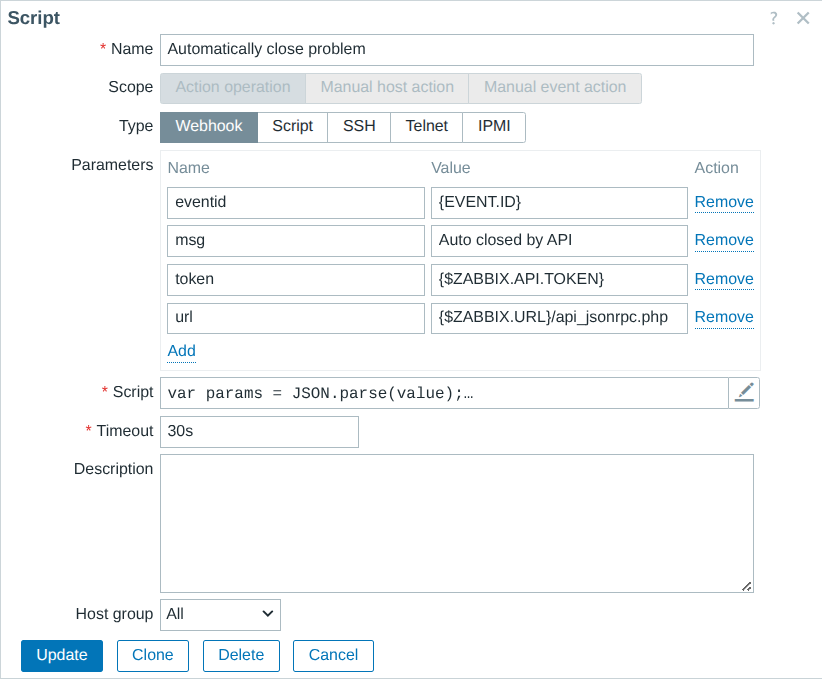
12.13 Auto close problem
Name will be:
Scope: Action operation
Type: Webhook
Parameters:
eventid set:
msg title is:
token must be:
url points to:
Script:
var params = JSON.parse(value);
var request = new HttpRequest();
request.addHeader('Content-Type: application/json');
request.addHeader('Authorization: Bearer ' + params.token);
var eventAcknowledge = JSON.parse(request.post(params.url,
'{"jsonrpc":"2.0","method":"event.acknowledge","params":{"eventids":"'+params.eventid+'","action":1,"message":"'+params.msg+'"},"id":1}'
));
return JSON.stringify(eventAcknowledge);
For the triggers which need to be closed automatically, we need to:
1) Set Allow manual close checkbox ON
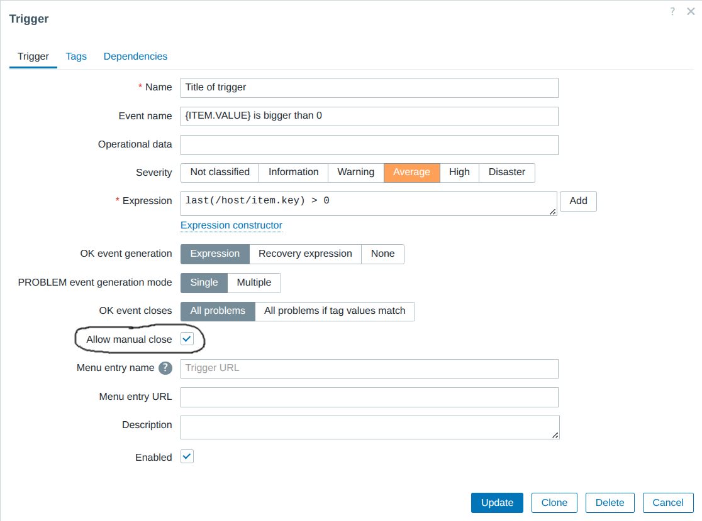
12.8 Allow manual close
2) Install tag auto with value close
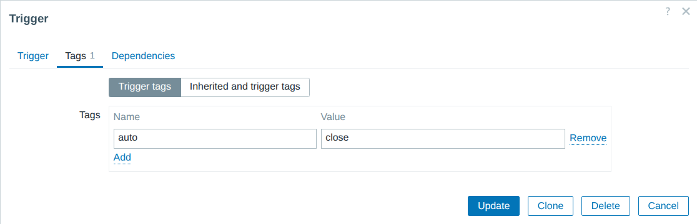
12.9 Trigger tags
Go to Alerts => Actions => Trigger actions
Create an action which will be targetable
by using tag name auto with a tag value close.
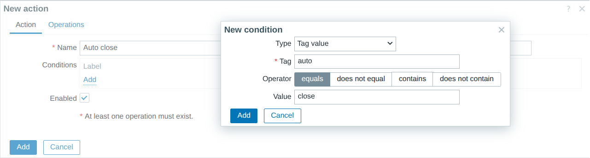
12.10 Conditions for action
It's important to not create operation step 1, but start operation with step 2:
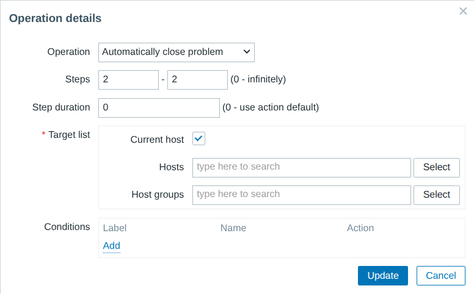
12.11 A delayed operation
The Default operation step duration field will serve the purpose to tell how long the event will be in problem state.
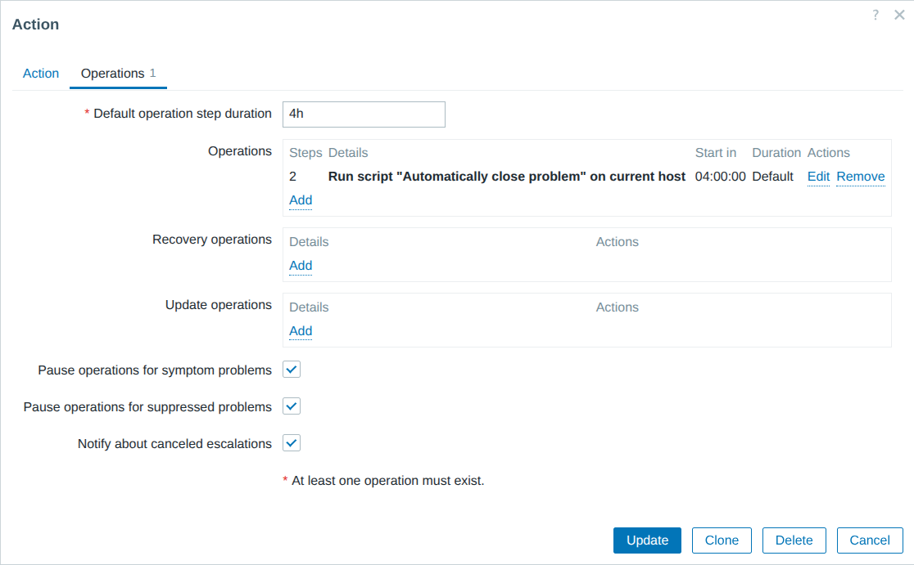
12.12 Close event later
This solution has been tested with 7.0/7.4
Self destructive host (Webhook)
Use case
On a big infrastructure with thousands of devices there is no human who can track which devices are deprovisioned. Need to automatically remove unhealthy devices.
Implementation
Problem events such as "Zabbix agent is not available" or "No SNMP data collection" sitting too long in problem state will invoke a webhook to delete the host.
To implement, visit Alerts => Scripts, press Create script
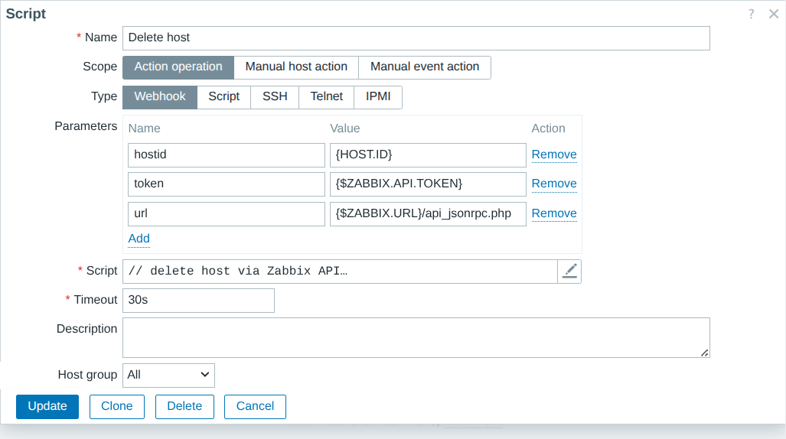
12.13 Auto close problem
Name will be:
Scope: Action operation
Type: Webhook
Parameters:
hostid set:
token must be:
url points to:
Script:
// delete host via Zabbix API
var params = JSON.parse(value);
var request = new HttpRequest();
request.addHeader('Content-Type: application/json');
request.addHeader('Authorization: Bearer ' + params.token);
var hostDelete = JSON.parse(request.post(params.url,
'{"jsonrpc":"2.0","method":"host.delete","params":['+params.hostid+'],"id":1}'
));
return JSON.stringify(hostDelete);
To setup action, the trigger must running a tag delete with value host.
The conditions can be to target tag plus value and trigger severity:
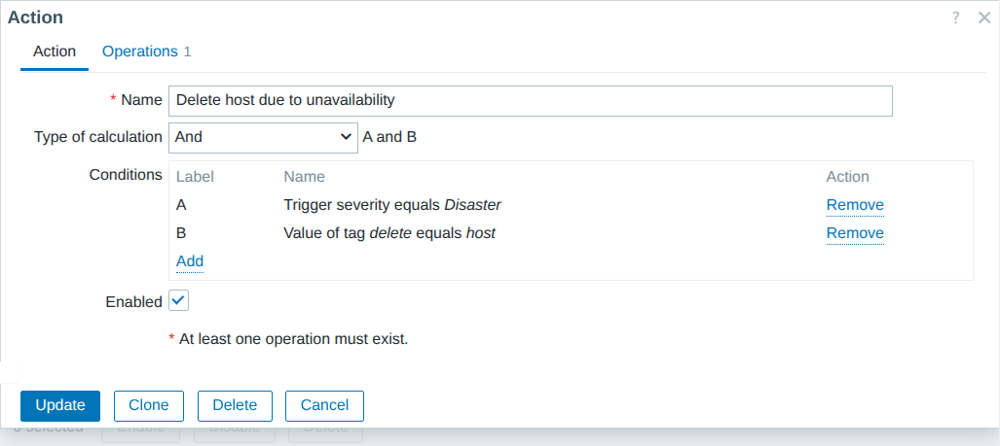
12.15 Delete host target tag and tag value
Here we are running a delayed action with a step number 31. Because default duration is 1d, the host will be deleted after 30 days.
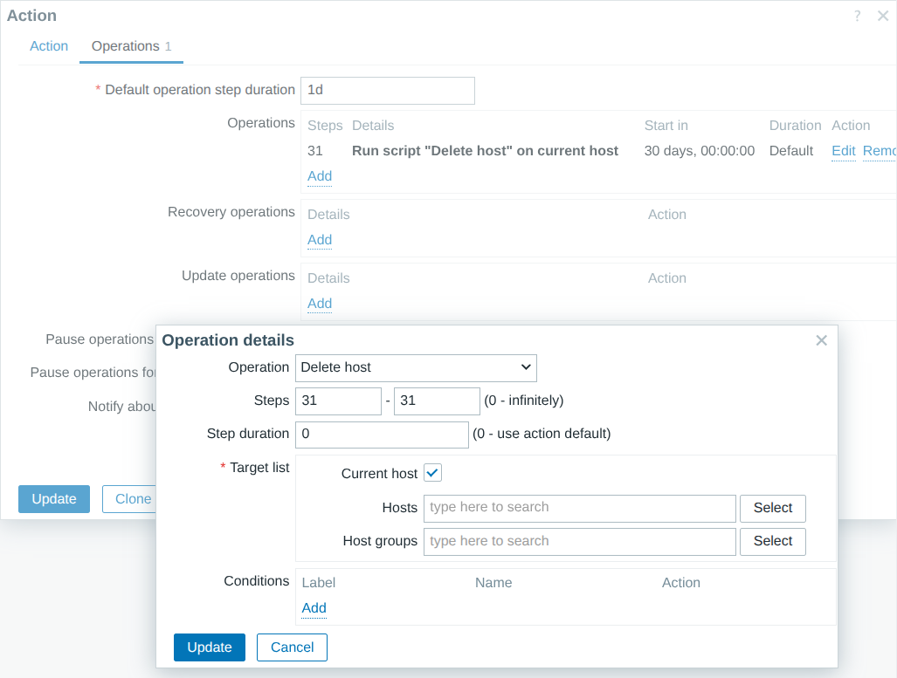
12.16 Delete host operations
Replace host Visible name (Script)
The "Script" item is handy to take data from step 1 and use it as an input for step 2.
Configuration-wise, the "Script" item will give an elegant looking solution where all base variables are kept outside the script.
Use case
Replace host "Visible name" with a data coming to an item
Implementation
Every host, by default, will store the intended host visible name inside inventory. The "Script" item (without running extra API calls) will compare inventory with host visible name. If inventory field is empty, the visible field will not be replaced.
This is maximum efficiency to run a single API call once per day. If nothing needs to be done, API calls will not be wasted. No SQL UPDATE operations for the Zabbix database :)
// load all parameters in memory
var params = JSON.parse(value);
// new API call
var request = new HttpRequest();
request.addHeader('Content-Type: application/json');
request.addHeader('Authorization: Bearer ' + params.token);
// obtain Bare minimum fields: host "Visible name" and inventory "Name"
var hostData = JSON.parse(request.post(params.url,
'{"jsonrpc":"2.0","method":"host.get","params":{"output":["hostid","inventory","name","host"],"selectInventory":["name"]},"id":1}'
)).result;
var listOfErrors = [];
var listOfSuccess = [];
// iterate through host list
for (var h = 0; h < hostData.length; h++) {
// validate if inventory "name" element exists
if (typeof hostData[h].inventory.name !== 'undefined') {
// if "name" field is not empty
if (hostData[h].inventory.name.length > 0) {
// compare if inventory name is not the same as host visible name
if (hostData[h].inventory.name !== hostData[h].name) {
Zabbix.Log(params.debug, 'Host visible name field, host: ' + hostData[h].name + ' need to reinstall visible name');
// formulate payload for easy printing for troubleshoting
payload = '{"jsonrpc":"2.0","method":"host.update","params":' + JSON.stringify({
'hostid':hostData[h].hostid,
'name':hostData[h].inventory.name
}) + ',"id":1}';
Zabbix.Log(params.debug, 'Host visible name field, payload: ' + payload);
try {
hostUpdate = JSON.parse(request.post(params.url, payload));
// save API errors, like name already exists:
if (typeof hostUpdate.error !== 'undefined') { listOfErrors.push({'error':hostUpdate.error,'origin':hostData[h].host}) }
// save successfull operation:
if (typeof hostUpdate.result !== 'undefined') { listOfSuccess.push(hostUpdate.result) }
}
catch (error) {
throw 'noo';
}
}
}
}
}
return JSON.stringify({ 'listOfSuccess': listOfSuccess, 'errors': listOfErrors });
The chances of having duplicate host names are still possible. In this case, the script will continue to parse all hosts and will retry update operation. Ensure $.listOfErrors in output is an empty list.
This is tested and works with Zabbix 7.0